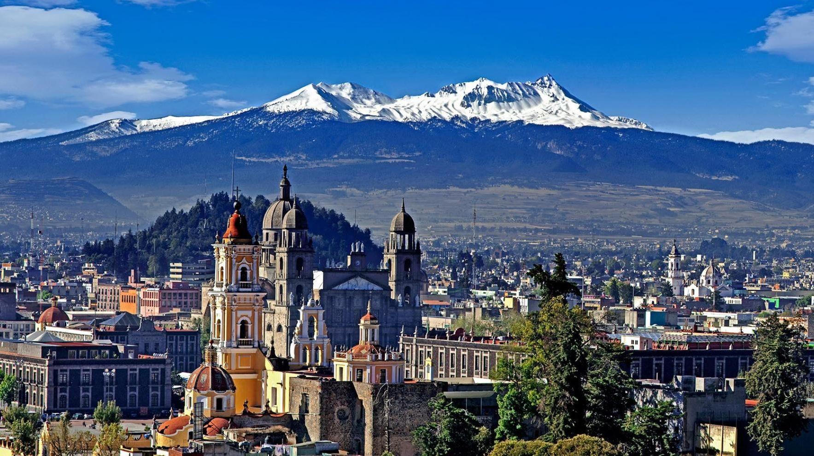

Esta entidad es una de las 32 que integran los Estados Unidos Mexicanos, lleva el nombre de la nación misma y de la capital nacional, y por tal motivo suele denominársele estado de México para distinguirla de las anteriores, aunque oficialmente se llama solo México, según lo dispuesto por el artículo 43 de la Constitución Política de los Estados Unidos Mexicanos.
La palabra México proviene de tres voces del idioma náhuatl: metztli, que significa luna; xictli, ombligo o centro; co, lugar. Tanto en sentido literal como metafórico quiere decir "en el ombligo de la luna"; o dicho de otra manera: "en el centro del lago de la luna". Esta denominación es porque el contorno de los antiguos lagos que ocupaban la cuenca de México, se parecía a la figura de un conejo, similar a la silueta que forman las manchas lunares vistas desde la tierra. Y como la gran ciudad de tenochtitlan estaba en el centro de estos lagos, simbólicamente se ubicaba también en el "ombligo" del conejo de la luna.
Otra versión acerca del origen de la palabra es que deriva de de Mexictli, nombre dado al dios Huitzilopochtli, "el colibrí del sur" que condujo a los mexicas hacia la región lacustre del centro de México. Mexictli se compone de las raíces metl (maguey), xictli (ombligo) y el locativo co, su traducción sería "en el ombligo del maguey", lo cual nos habla del sentido mitológico que a esta planta le dieron las culturas prehispánicas.
En 1786, España estableció el sistema administrativo de las llamadas intendencias y la primera de ellas fue precisamente la "Intendencia General de Exercito y Provincias de México", con capital en la Ciudad de México.
Para el 2 de marzo de 1824 se reconoce como fecha oficial de la creación del Estado de México, aunque sus antecedentes se remontan al periodo colonial, cuando en el año de 1548, el territorio recibió el nombre de Provincia de México, quedando integrada por cinco de las 23 provincias mayores en las que se dividía el Virreinato.
Hoy en día el Estado de México cuenta con 152 municipios, de los que solo algunos tienen desarrollo turístico.
La Ciudad de Toluca es la capital del Estado de Mexico, y es la Ciudad donde vivo.
